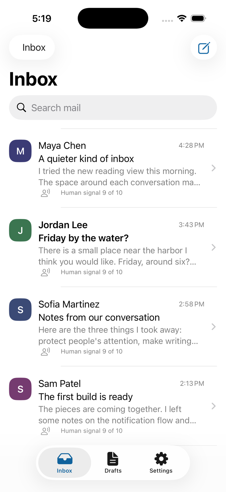
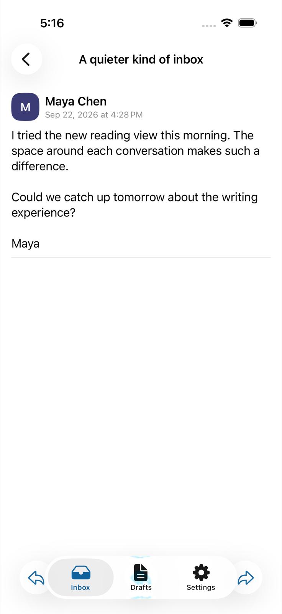
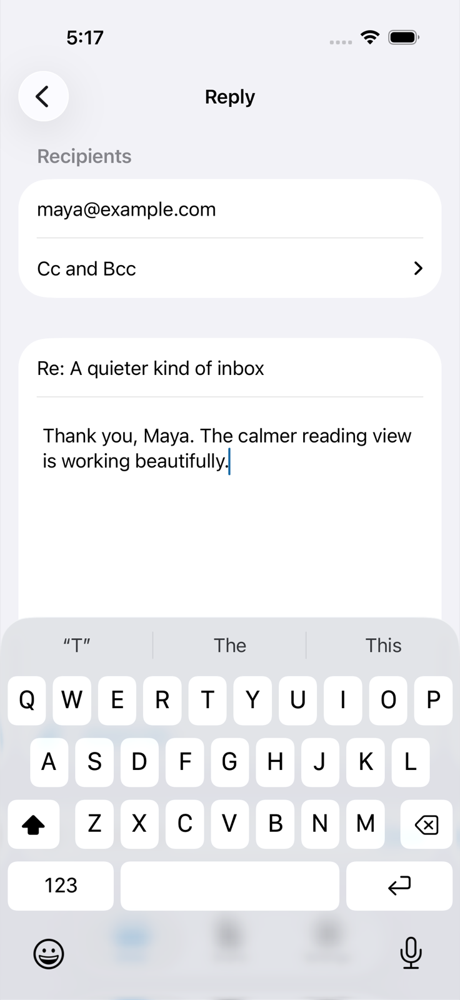
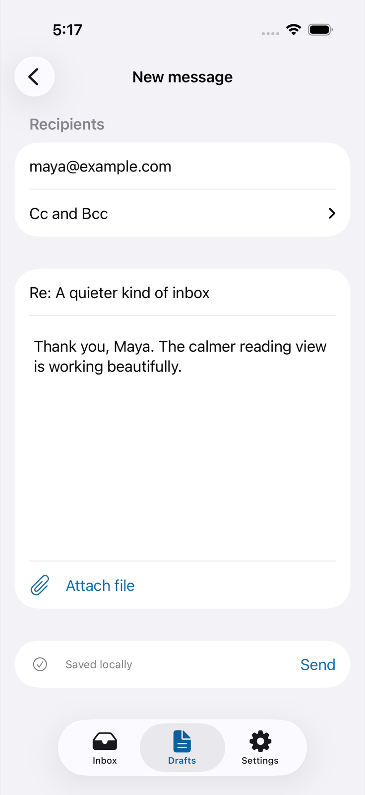
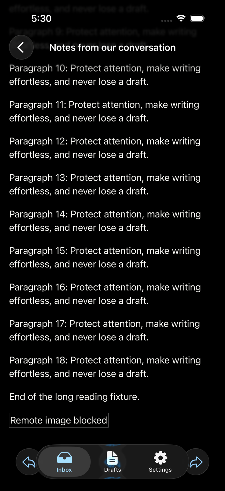
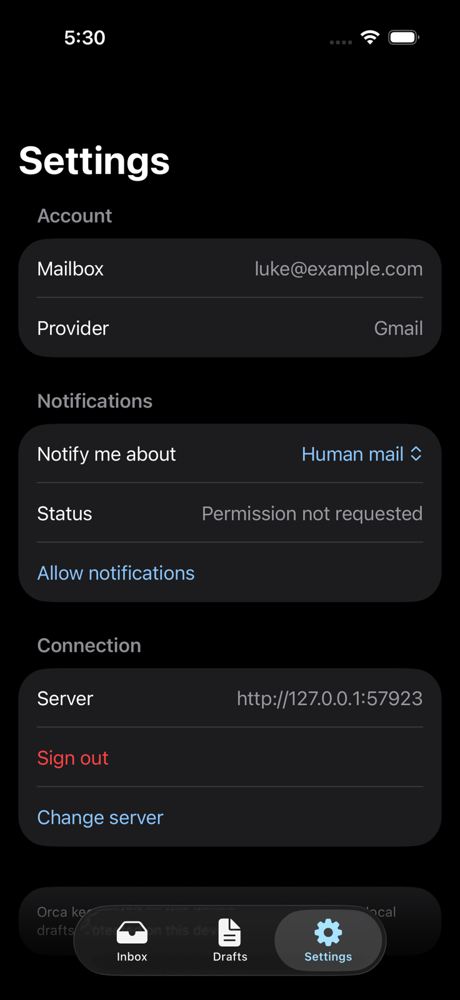

Orca · iOS implementation
Reading, writing,
and a quieter phone.
Verification record for the native SwiftUI client and the mobile API. Simulator fixtures contain synthetic mail and simulate provider delivery.
What is implemented
Inbox, Focus, search and account switching; a conversation reader with protected HTML and authenticated attachments; durable local drafts, reply, reply all, forward, file attachment selection and idempotent delivery. Mobile sign-in uses browser consent and PKCE. Notifications support Human mail, All mail and Off, with private payloads and account-scoped routing.
Verified locally
| Area | Evidence |
|---|
| API regression coverage | All 101 test files have passing isolated runs. The combined Bun run encountered timeout cascades; isolated reruns passed. A Gmail push acknowledgment test now checks a deferred provider gate instead of a 250 ms wall-clock assertion. |
| Final API contracts | 70 tests passed across the API contract, agent boundary, MIME and shared schema suites after attachment limits were added. Mobile authentication fixes: 33 tests passed. |
| Database upgrades | Clean migration, stacked upgrade, replay and reset verification passed, including mobile authentication and push tables. |
| Web authentication | 60 App tests passed. All workspace typechecks passed. |
| Production Swift API client | Accounts, inbox, reader, draft create/update, send and replay passed against an isolated fixture. Required nullable fields were checked. The delivery ledger contains one send for the replayed draft. |
| Native client | Final simulator build succeeded; 17 native unit tests and both XCUITests passed. The UI exercised Inbox, reading, search, reply autosave, reopening a draft with recipients/body preserved, sending and removing the sent draft. Exactly one simulated delivery was recorded. Settings and the end of a long HTML conversation were verified with system dark appearance. Visual review also corrected the dark accent so action labels remain readable. |
From the running app
iPhone 17 simulator, synthetic mailbox. Screenshots captured during native acceptance.

Inbox · light appearance
Conversation reader
Reply · local draft saved
Draft reopened with recipient and body
Long HTML message · dark appearance
Settings · dark appearanceIndependent integration review passed after the final draft recovery and wire-format fixes. Simulator notification-tap injection, live APNs delivery, VoiceOver and physical-device checks remain unverified.
Run the isolated mailbox
bun apps/api/scripts/mobile-fixture.ts
open apps/ios/Orca.xcodeproj
bash apps/ios/Tools/check-api.sh /path/to/fixture/connection.json
The fixture prints its loopback URL and a local connection-details file. Debug builds accept --fixture-api-url and --fixture-access-token launch arguments. Production builds exclude these fixture paths. The fake provider records simulated sends in deliveries.json beside the connection file.
Physical delivery requirements
Live APNs delivery and physical installation still need an Apple development team, a matching App ID and push key, the reviewed API/web deployment, and your connected iPhone. Run the API as an always-on Bun service with persistent SQLite; importing its Hono app into a serverless handler does not start the push scheduler. The device acceptance card lists the exact checks.
Outlook sync and sending remain unavailable in the existing provider adapter. Gmail-backed accounts are the supported first release. No real emails were sent during fixture validation.